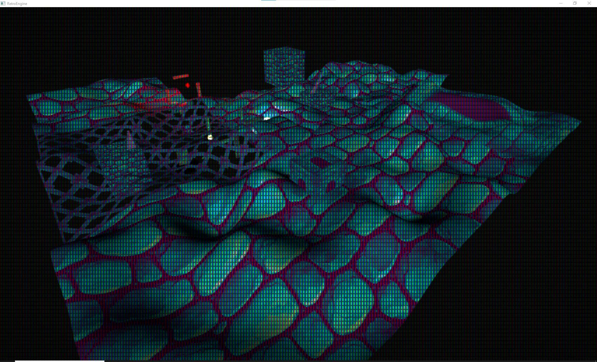
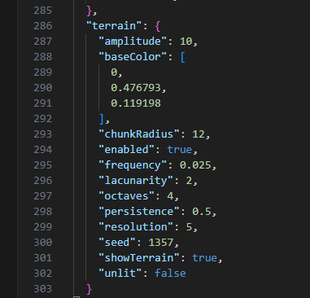

Indoor Tools Exposed an Outdoor Problem
Last week was about chunks as authoring tools. Setup anchors, snap to grid, visualize previews, that all works great.
That solved indoor assembly. I could build enclosed spaces quickly without fighting transforms. But the moment I tried to build anything outdoors, the illusion broke.
Everything sat on an infinite flat plane.
Fine for debugging. Not fine for real environments. And right now everything I’m building needs to move toward an actual playable prototype.
I also didn’t want to manually model giant terrain meshes just to test outdoor ideas. If I’m building my own engine, it should help me here.
So the chunk system quietly turned into something much bigger.
A World Chunk System
The original chunk feature was an authoring convenience that let me rapidly save a group of entities and re-instantiate them easily.
Terrain chunks are different. They’re spatial partitions that own procedural geometry.
I resisted building a separate “terrain pipeline.” Terrain does not get a special pass. Each chunk simply spawns a normal SceneEntity at runtime with a generated mesh attached.
It renders through the exact same SceneRenderer path as everything else. No terrain-only branch. No hidden paths. It is important with such a large project to constantly make sure things stay in aligment and don't spiral, making the project unsustainable.
The First Test
The first version technically worked.
You could tweak seed and frequency and it would regenerate. That was about it. Here is the new terrain editor and its controls:

But it proved the one thing that mattered: the mesh builder was deterministic.
Given a seed and chunk coordinate, it always built the same geometry. That’s what makes streaming possible.
And importantly, this small block of terrain data is all that gets saved in a scene. From that alone, the world can rebuild itself.
Early terrain controls in the editor. Basic, but functional. There are some small visual bugs here too initially, but I would get those quickly.
First successful terrain generation. Noise only. No color control. Lighting was off. Seams were obvious.
Seams and Lighting (And Why They Happened)
The first obvious problem was seams between chunks.
The heights were correct. The normals were not.
Each chunk computed normals locally, unaware of its neighbors. That meant border vertices matched in height but disagreed in lighting.
The fix wasn’t stitching geometry together. It was sampling everything in world space.
Chunk coordinates are converted into world-space offsets before noise is evaluated. Border vertices sample identical input values. Normals derive from the same global height field.
Once everything referenced the same coordinate space, the seams disappeared.
Lighting instability came from something else.
Terrain meshes initially didn’t supply a valid local AABB. That broke assumptions in culling and lighting.
Once the mesh builder returned a proper bounding box and that was assigned to the SceneEntity, frustum behavior stabilized and lighting became predictable.
Nothing dramatic. Just systems disagreeing about space and lifetime.
The Bugs That Forced Discipline
The hardest bugs weren’t visual. They were structural.
Old scenes suddenly had terrain entities in them even though terrain was disabled. Debug cubes showed up in the outliner. Entity IDs were being reused in ways I didn’t anticipate.
At one point, unrelated scene entities were being hijacked because their IDs matched a previous terrain entity.

That was a fun evening.
The fixes were simple, just not glamorous:
- Terrain entities validate their own name before reattaching to an ID.
- Chunk debug entities are destroyed immediately when not visible.
- SceneGraph::Clear() resets terrain state alongside lighting and entities.
- Terrain only updates when
terrain.enabledis true. - Enable/disable transitions force a clean rebuild.
It took a few iterations to reach a stable point:
- Old scenes load clean.
- Scenes without terrain stay clean.
- Editor and runtime behave identically.
That last one matters. I don’t want two engines hiding in one project.
What Actually Gets Saved

Terrain is not serialized as geometry.
The scene file stores only parameters: enabled flag, radius, seed, amplitude, frequency, resolution, and shading values.
On load, the chunk manager regenerates everything.
No mesh blobs. No cached terrain files. Just deterministic parameters.
Terrain now persists with scenes and rebuilds reliably.
Streaming
Once regeneration was reliable, streaming became obvious.
The camera’s world position is converted into chunk grid coordinates by dividing by chunk size and flooring the result. That becomes the active center.
A square region of chunks is maintained around that center. If a chunk exits the radius, it is destroyed after a GPU flush. If a chunk enters the region and doesn’t exist, it is generated on demand.
There’s no rolling buffer. No shifting origin. No accumulated drift.
A chunk at coordinate (12, -3) will always generate the same geometry, whether you walk there or teleport instantly.
That determinism is what makes endless travel possible.
Right now the streaming region is square. Circular logic will come later. Square is easier to reason about while stabilizing the system.
And it works the same in editor and runtime. Same manager. Same lifecycle.
I can fly a basic ship forward and the world keeps generating. And the entire thing is derived from a handful of saved parameters.
Chunks streaming in and out around the camera.
Shading
Terrain currently supports:
- Lit or unlit shading
- Base color
A previous “terrain bleeding” bug revealed that terrain entities already flowed through the same material pipeline as regular meshes.
Once lifecycle bugs were fixed, terrain inherited lighting and shading automatically.
In the near future I'd like to expand the material attributes for terrain even more to match what can be done with regular entities.
Lessons
This wasn’t so much about learning noise functions, instead it was about really understanding ownerhip within the engine.
The chunk manager owns lifecycle. The scene graph owns data. The renderer stays dumb.
Every time I blurred those boundaries, things broke in strange ways.
When the separation was strict, bugs became obvious.
And as usual, Direct3D 12 does not forgive lifetime mistakes. If you free a mesh while the GPU is using it, it doesn’t complain politely.
It just ends you.
Next
Terrain is stable enough to use. That’s the bar for now.
Next is expanding terrain materials to match the regular material pipeline.
After that, likely sculpting and collision. Or something else entirely. The engine tends to decide what needs attention next.
Thanks for following along.